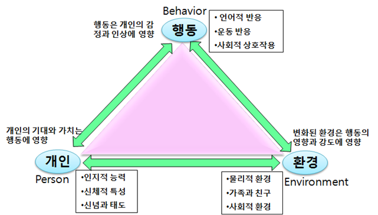
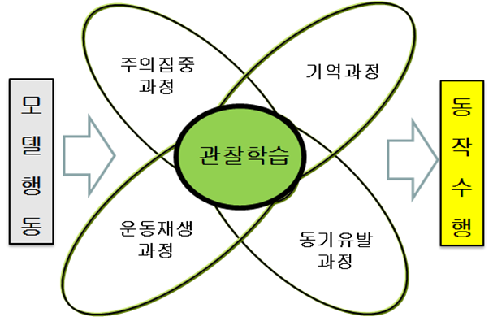

인간의 모든 행동은 관찰이나 모방을 통한 학습
인간이 어떤 행동을 학습하는 데 있어서 외부로부터의 자극뿐 만 아니라 인간 내부의 인지적 요인이 함께 작용하여 학습이 진행된다는 것이다. 반두라(Bandura)는 인간의 모든 행동은 직접적인 조건화가 아닌 관찰이나 모방을 통해서도 학습될 수 있다고 보았다. 이는 관찰학습, 모방학습, 사회학습, 대리학습, 모델링학습, 대리적 조건화에 의한 학습이라고도 한다. 즉, 발달은 인간이 출생 후 환경의 지속적인 상호작용에 의한 관찰학습(observational learning)은 관찰과 모방(imitation)을 통해 학습이 이루어진다는 인지과정의 중요성을 강조한 것이다.
그는 어떤 보상이나 처벌의 조작 결과로 인간의 성격과 행동을 조성한다는 왓슨(Watson), 스키너(Skinner)와 다르게 개인(person), 행동(behavior), 환경(environment) 요소들 간의 관계가 지속적인 상호작용에 의해서 결정된다는 견해이다. 사회학습이론에 따르면 인간의 학습은 다른 사람과의 사회적 관계에 의해서 이루어진다고 정의되어질 수 있다. 즉, 관찰학습을 통해 다른 사람의 행동을 인지적으로 재현하고, 스스로 그러한 행동을 나타낼 수 있다.

관찰학습에 필요한 단계별 요소
인간에게 바람직한 행동을 조성하기 위해 바람직한 행동모델 및 환경을 활용하도록 학습 요소를 제시해야 한다는 점이다. 이에 인간의 발달 과정은 외적인 환경자극과 내적인 사건과의 상호작용을 통해 결정되는 상호결정론(reciprocal determinism)모델을 제시하였다. 이러한 관찰학습은 주의집중 과정, 기억 과정, 운동재생 과정, 동기유발 과정이 반드시 필요하다. 이 네 가지 중에서 한 가지라도 빠지면 사회학습이론의 모형은 불완전하게 되므로 성공적 모방이 이루어지지 못한다. 반두라의 사회학습이론은 관찰학습 또는 모델링(modeling)이라고도 하는데, 이러한 관찰학습의 과정을 단계별로 나누어보자면 네가지 단계로 분류할 수 있다.
1. 주의집중과정
주의(attention) 또는 집중하는 능력이란 실험참가자가 자신이 모방할 대상을 주목하는 단계이다. 관찰자극의 특성을 결정짓는 요인으로는 대상자의 특성과 학습자의 특성의 정도와 학습자의 정서적 가치와의 일치여부, 그리고 학습자에게 유익한 결과의 여부 등이 영향을 미친다. 이 단계에서 관찰자의 특성을 결정짓는 요인은 관찰자의 대상파악 능력과 각성수준, 그리고 관찰자의 과거의 강화 경험이 영향을 미치는 요인이다.
2. 기억(파지)과정
파지의 과정이란 관찰자가 모방할 행동의 내용을 기억하고 유지하는 과정을 의미한다. 일정기간 동안 모델의 행동을 상징적인 형태로 기억(memory)하는 능력. 기억은 문자나 부호화 등으로 표상화시켜서 필요에 따라 회상하고 유용하게 이용하는 능력이다.
3. 운동재생과정
운동재생과정은 재현(행동)과정이라고 한다. 학습자가 모방하고자 하는 대상의 행동을 구체적으로 나타내는 과정으로서 학습자의 재현 능력과 정교화 능력에 의해서 영향을 받게 된다. 즉, 자신의 행동과 모방하고자 하는 모델의 행동의 비교를 통하여 운동재생(motion reproduction)을 꾸준히 수행하는 능력이다.
4., 동기유발과정
동기과정이란 학습자가 관찰과 모방을 통해서 습득한 행동이 자신의 실제환경과 상황에서 수행하고자 하는 동기화 과정이다. 동기유발(motivation)은 관찰한 것을 직접강화 또는 대리강화(vicarious reinforcement)의 형태로 수행할지 말지에 미치는 행동 능력이다. 이 단계는 학습자의 행동에 대한 직접적인 보상과 대리강화, 그리고 학습자가 습득한 행동을 직접해보고 싶어하는 자기 욕구에 의해서 이루어지는 행위과정이다.

반두라의 행동주의에 대한 의식은 문제제기로부터 시작
반두라의 사회학습이론은 모방학습의 중요성에 대한 자기 자신의 자각을 증진시켰고, 사회적 환경이 인간에게 얼마나 많은 영향을 미치는가에 대해 다시 한번 인식하도록 하였다.
첫째, 행동주의 학습이론은 관찰‧추적이 어렵다는 이유로 인간의 학습과정에 대한 연구에서 정신기능이 경시되는 경향이 있다.
둘째, 인간행동은 복잡한 사회적 인간관계를 통해서 형성되고 변화되어가는 것인데 행동주의 학습이론에서처럼 단순한 동물실험의 결과를 인간행동에 일반화 시키는 것이 타당한 것인가에 대한 문제다.
셋째, 또한 인간은 환경에 대해서 수동적 순응 뿐만 아니라 유기체 자신의 적극적인 선택과 수용에 의해서 행동을 변화시킨다.
이와 같이 반두라에 의하면, 인간은 어떤 식으로 행위하느냐에 따라서 환경에 영향을 미치며, 이렇게 변화된 환경은 다시 자신의 후속행동에 영향을 미치게 되기 때문에 행동, 인간, 그리고 환경의 세 요소는 교호작용을 한다는 것이다.
2022.01.21 - [분류 전체보기] - 비고츠키의 사회문화적 발달이론 - 비계설정, 혼잣말
비고츠키의 사회문화적 발달이론 - 비계설정, 혼잣말
사회문화적 발달이론의 근접잘달 영역 비고츠키(Lev Vygotsky)의 사회문화적 이론(sociocultural cognitive theroy)은 인간은 사회적 맥락 속에서 존재하기 때문에 사회적 맥락을 떠나서는 이해할 수 없다고
think-sis.co.kr